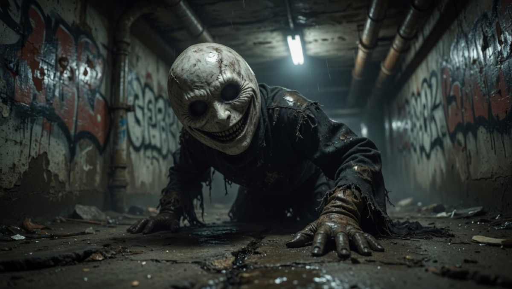
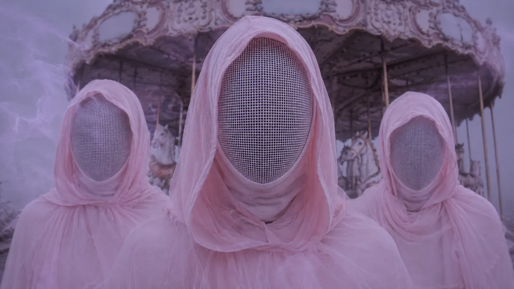
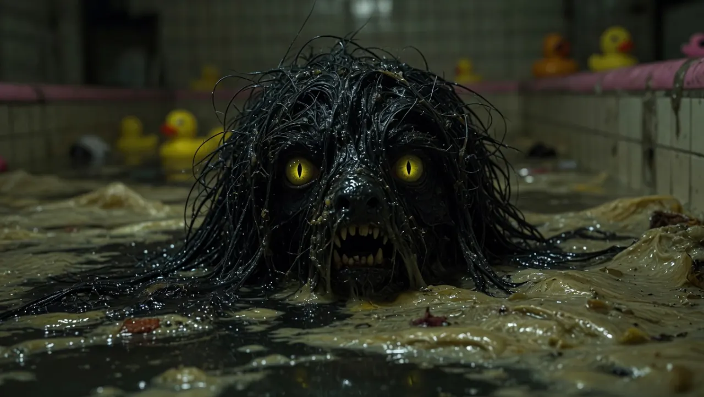

Абсолютная Мягкость
Наши аниматоры в костюмах животных обучены дарить самые теплые объятия. Помните: под мехом — только забота.
Мы возвращаем то, что время заставило вас забыть.
В эпоху «Великой Терапии», когда мир стал совершенным, но пустым, мы нашли способ вернуть вам краски жизни. Корпорация «Детский Жир» — это не просто сеть развлекательных комплексов. Это единственный в мире био-эмоциональный заповедник, созданный для того, чтобы вы снова смогли почувствовать истому.


Мы верим, что каждый взрослый заслуживает права на «Сладкий Сон». Используя инновационные разработки нашего партнера Tyndex Robotics, мы воссоздаем идеальные лиминальные пространства: от уютных коридоров детских садов «Солнышко» до бескрайних бассейнов «Дельфин». Здесь время замирает, а ваши сны возвращаются домой.
Наши аниматоры в костюмах животных обучены дарить самые теплые объятия. Помните: под мехом — только забота.

Каждая минута вашего пребывания выверена по золотому стандарту качества Администрации. Мы следим за вашим пульсом, чтобы вы могли о нем забыть.

Мы создали мир без стресса. Пожалуйста, соблюдайте правила, и ваша прогулка по «Лосиному Острову» станет вечностью, о которой вы всегда мечтали.
«Детский Жир» — потому что ваше детство слишком ценно, чтобы просто его помнить. Его нужно ощущать кожей.

Статус: Сбор сырья. Эффективность экстракции: 98.4%
Корпорация «Детский Жир» — это вертикально-интегрированный производственный цикл по выжимке липидных воспоминаний и гормонального субстрата из малогабаритных биологических единиц. Наша цель: бесперебойная поставка Формулы 312.
ВНУТРЕННИЙ РЕЕСТР // ДОПУСК ЗЕЛЁНЫЙ
ЗАПИСЬ

Использование визуальных ностальгических паттернов для дезориентации объектов. Бассейны с розовой плиткой, запах сладкой ваты и заброшенные ТЦ на время блокируют критическое мышление и вызывают фазу «инфантильного доверия».

Расходный материал из числа бывших зависимых. Обязаны находиться в костюмах 24/7 для поддержания иллюзии «мягкости». В случае попытки снятия маски — немедленная утилизация в тире парка «Солнышко».

Контроль состояния аниматоров и калибровка сырья по стандарту 312. Вводит инъекции «Сладкого сна» и следит за уровнем ностальгии. Подчинаются только Главврачу ТЦ "Детский Жир".

Отвечают за гостеприимство, селекцию потоков и строгое соблюдение правил Администрации. Всегда улыбаются сквозь Маску Солнца. Помогут найти выход через горку или процедурную.

Владельцы приватных островов и закрытых прибрежных участков, недоступных для гражданского посещения. Многие объекты комплекса построены на территориях, добровольно переданных Элитариями под нужды программы

Жертвы терминальной стадии зависимости от Формулы 312. Ментально ослепшие оболочки, чей мозг деградировал до единственного базового скрипта — поиска малогабаритного сырья. Являются заложниками слепоты и наивности: их легко обезвредить простой фразой «я уже не ребенок».
Добровольные участники программы «Верни себе детство». Посещают объекты комплекса ради острых ощущений, контролируемого страха и доступа на новые уровни игры. Носят театральные маски. Многие добровольно подписывают бессрочные контракты после первого посещения Красной Комнаты.

Религиозное движение, возникшее после Эпохи Терапии. Считают ностальгию последней настоящей эмоцией человечества, а Формулу 312 — священным таинством. Во время служб используют розовые рясы, детские колыбельные и неизвестные благовония. Курируют объекты паломничества и центры докорма.

Жертвы неудачных фармацевтических и нейрохимических процедур. Утратили стабильную человеческую форму после длительного воздействия концентрата Формулы 312 и промышленных препаратов Тындекса. Используются для тестирования фильтрационных систем, токсичных сред и новых процедур утилизации. Запрещено кормить и фотографировать.

Обеспечение логистики. Роботы серии «Илюша» и «Танюша» осуществляют первичный захват и транспортировку сырья в цеха обвалки.
Сведения удалены внутренним протоколом. Уровень допуска: отсутствует.
Важное напоминание для персонала: Сырье категории А (до 312 граммов эссенции) требует бережного обращения до момента фильтрации. Помните: страх портит глазурь, но отчаяние делает продукт слаще. Следите за тем, чтобы гости не находили выходы раньше времени. Выход только один — через горку.
Администрация благодарит вас за лояльность.